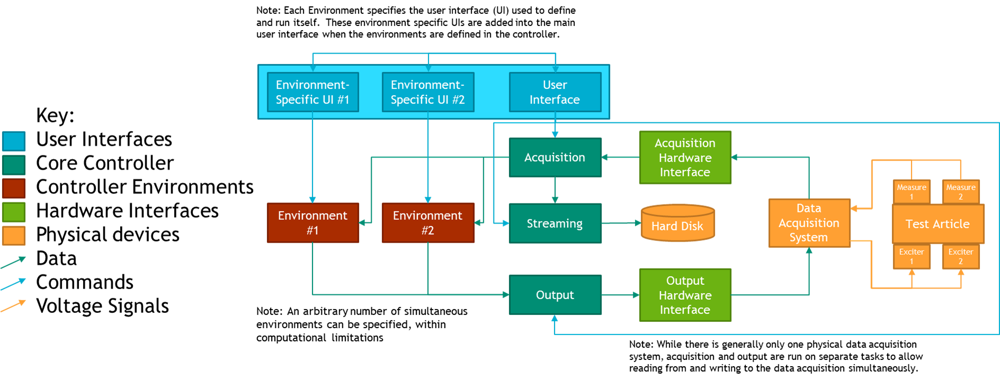
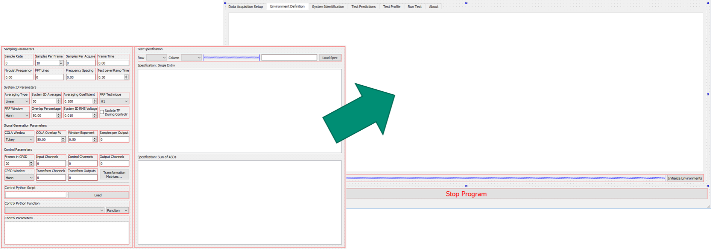
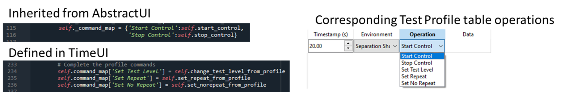

17. Implementing New Environment Types
WARNING: This chapter contains advanced Rattlesnake operations that require a very good understanding of the Rattlesnake software architecture. Understanding this chapter is not required to run the software successfully, and therefore this chapter can be skipped if the user is not interested in implementing new environments. Implementing an environment is a serious undertaking that will involve potentially thousands of lines of code depending on its complexity (the \Ac{MIMO} Random Vibration environment is over 3,000 lines of code), so this chapter will only present the basic concepts and minimum required coding, leaving the reader to dig into the code to understand the actual details required to implement the environment.
17.1. Overview of Environments
In Rattlesnake, an environment is the portion of the code that generates the signal that will be output, perhaps using previously acquired data to inform the next output signal. In order to use environments interchangeably or simultaneously, Rattlesnake abstracts its environments so the interface between an environment and the main controller is common regardless of the type of environment used. In general, an environment will consist of three main parts, and each of these parts inherits from an abstract base class defined in the components/abstract_environment.py source file in the GitHub Repository.
- Environment Metadata or Parameters: Each environment requires defining an object that contains all of the parameters that completely define that environment, e.g. frame lengths, window functions, averaging, control targets, etc.
- Environment-specific UI: Each environment requires defining a \ac{UI} into its functionality. This includes both the actual \ac{GUI} that appears on the screen, as well as the code to handle the operations performed when the user interacts with the \ac{GUI}.
- Environment Implementation: Each environment requires defining its operations. These operations will involve, for example, computing transfer functions between excitation and responses on the part, computing various metrics, and must at the end determine the next signal that will be output to the excitation devices in the test.
17.2. Overview of Environment Interactions with the Controller
Rattlesnake runs most of its tasks on separate processes in order to perform operations simultaneously. Figure 17-1 shows a high-level overview of the controller processes.

Figure 17-1. High-level flow chart of the Rattlesnake software
The \ac{UI} of the controller exists on the main Rattlesnake process. Therefore, any environment-specific \ac{UI} components are also run on this process. At run-time after the environments in a given test have been selected, the controller assembles the \ac{GUI}, combining it with the environment-specific interfaces of each environment used in the test. Typically, the constructor for each environment's \ac{UI} class will handle adding the environment-specific portion of the \ac{GUI} to the main \ac{GUI}. The class implementing the \ac{UI} should inherit from the \inlineCode{AbstractUI} class in the \inlineCode{components/abstract_environment.py} file.
The class implementing the environment computations should inherit from the \inlineCode{AbstractEnvironment} class in the \inlineCode{components/abstract_environment.py} file. Each environment is run on a separate process to enable environments to run simultaneously with the acquisition and output processes. Because of this, environments communicate with the rest of the controller primarily via \inlineCode{queue} objects from the Python \inlineCode{multiprocessing} module. Messages put to and received from these queues are generally of the form \inlineCode{(message,data)} where \inlineCode{message} specifies the operation that the receiving process should perform, and the \inlineCode{data} is any parameters or input data required by that operation. For example, a \inlineCode{message} might be \inlineCode{START_CONTROL} and the \inlineCode{data} might be a test level such as \inlineCode{-6} dB. It is up to the environment to define what operations to perform when it receives the \inlineCode{START_CONTROL} message.
Each environment will interact with many data streams, and therefore will interact with many \inlineCode{queue}s. Each environment will have an \inlineCode{input_queue} or \inlineCode{command_queue} that it will pull these instructions and data from. To enable the environments to pass messages back to the controller, a \inlineCode{controller_communication_queue} is provided where the environment can put its own messages and data to be read by the controller. A \inlineCode{gui_update_queue} also exists for environments to put updates to the \ac{GUI}; this would be used to tell the controller to update a plot or set the value of some widget.
The environment will receive acquired data through a \inlineCode{data_in_queue}, so it can use previously measured data to compute control decisions. Similarly, the environment will put its next output data set to a \inlineCode{data_out_queue}, which will be read by the output process and put to the data acquisition system through the output hardware interface.
Finally, the environment can put messages to a \inlineCode{log_file_queue} which will be written to the Rattlesnake log file, which is useful for debugging environment behavior.
In general, the environment parameters will be loaded, selected, or otherwise defined in the environment-specific \ac{GUI} in the main process, but need to be passed to the environment implementation running on a separate process. Rattlesnake requires that these parameters be packaged into an object that contains all the parameters to define the environment. The class defining this object should inherit from the \inlineCode{AbstractMetadata} class in the \inlineCode{components/abstract_environment.py} file.
17.3 Writing an AbstractMetadata Subclass
In general, the first step to defining an environment is to define the parameters that define the environment. These will be specified in a subclass of the \inlineCode{AbstractMetadata} class.
This class is for the most part just a container for the parameters, but it does require the definition of a \inlineCode{store_to_netcdf} method, as the controller needs to know how to take the different parameters defining an environment and store them to a netCDF file as output from Rattlesnake. For example, in the \Ac{MIMO} Random Vibration environment, this function defines the output structure described in Section 12.6 Output NetCDF File Structure. The Streaming process will call this function when it creates a netCDF file for output from Rattlesnake.
In many cases it can be helpful to specify other properties that are derived from the environment parameters as part of this class. For example, if one environment specifies a ramp time between test levels, one common computation would be to compute the number of time samples this ramping event takes from the ramp time and the sample rate of the data acquisition system.
17.4. Designing the Envionment-Specific GUI
With the parameters defining the environment defined in an \inlineCode{AbstractMetadata} subclass, \ac{GUI} components can be designed that allows a user of the software to specify these parameters and control the environment. At run-time, these components will be added to the main \ac{GUI} as shown in Figure 17.2.

Figure 17-2. Graphical representation of adding a \ac{GUI} element defining the \Ac{MIMO} Random Vibration environment into the main controller \ac{GUI}.
These \ac{GUI} elements can be designed using a software such as QtDesigner and loaded at run-time, or assembled programmatically in the constructor for the environment. Up to four \ac{GUI} components can designed, though two of the components are optional.
17.4.1. Environment Definition GUI
The first \ac{GUI} component that should be created is the interface in the Environment Definition tab. Essentially, the author of the environment should define a \inlineCode{GUI} element that contains all the parameters to define a specific environment, including signal processing parameters and the control targets. This is a required portion of the \ac{GUI} as all the environment parameters must be defined before the controller can be run.
17.4.2. System Identification and Test Predictions GUI
The second and third \ac{GUI} components are system identification and test predictions. These are optional, as not all environments will require system identification (e.g. the Time History Generator environment described in Chapter \ref{sec:rattlesnake_environments_time_generator}).
The system identification portion of the \inlineCode{GUI} is generally common between different controller types, as techniques for developing a transfer function between excitation and response are fairly universal. The user should be able to start and stop acquisition of transfer function data, as well as visualize the transfer functions as they are computed. Both the \Ac{MIMO} Random and \Ac{MIMO} Transient environments utilize a common system identification framework, which is defined in the \inlineCode{abstract_sysid_environment.py} and \inlineCode{abstract_sysid_data_analysis.py}. If users wish to utilize this system identification framework for their own environments, they are welcome to make their environment inherit from this class, which will save a significant amount of coding to write a new system identification framework.
When the system identification is performed, generally an environment can compute a prediction of the responses that could be achieved. Thought should be given as to the best way to present the predicted responses on the Test Predictions \ac{GUI} component. The user must be able to determine if a given test is feasible, so they should be aware of the required excitation as well as the accuracy the environment expects to achieve.
17.4.3. Environment Run GUI
The final \ac{GUI} component controls running the test. Here the user should be able to start and stop the environment, as well receive a visual of how well the environment is controlling the response of the test article. Generally this will entail some type of overview plot or table. This might also provide the functionality to visualize individual response or excitation channels.
17.4.4. Writing an AbstractUI Subclass
With the \ac{GUI} components defined, the code containing the \inlineCode{UI} logic and callbacks can be written. This will generally inherit from the \inlineCode{AbstractUI} class in the \inlineCode{components/abstract_environment.py} file.
17.4.4.1. Abstract Methods in the AbstractUI class
Because it inherits from the \inlineCode{AbstractUI} base class, classes defining environment-specific \ac{UI}s in Rattlesnake require definition of a number abstract methods:
- __init__: The class constructor that calls the superclass constructor, adds the \ac{GUI} elements to the main controller's \ac{GUI} tabs, and connects callback functions to the \ac{GUI} widgets. This function will also set up the command map as described below.
- collect_environment_definition_parameters: This function gathers the environment parameters from the current values of the \ac{GUI} widgets and constructs the corresponding \inlineCode{AbstractMetadata} subclass object.
- initialize_data_acquisition: This function is called when the Data Acquisition parameters are initialized (channel table, sample rate, etc.). It should set up the environment user interface accordingly.
- initialize_environment: This function is called when the Environment Parameters are initialized. It should set up the user interface and environment appropriately based off parameters specified in the environment's definition \ac{GUI} components. It must also return an object of the \inlineCode{AbstractMetadata} subclass corresponding to the present environment, so the controller can send it to the environment.
- retrieve_metadata: This function retrieves parameters from a netCDF dataset that was written by the controller during streaming. It must populate the widgets in the user interface with the proper information. Where the \inlineCode{store_to_netcdf} function in the \inlineCode{AbstractMetadata} subclass writes parameters to the netCDF file, this function must be able to read that data back into the controller.
- create_environment_template: This function creates a template worksheet in an Excel workbook where users can specify environment parameters that are loaded in via the \inlineCode{Load Profile...} button on the \inlineCode{Environment Selector} dialog box. This function should be defined using the \inlineCode{@staticmethod} decorator.
- set_parameters_from_template: This function reads the template generated by the \inlineCode{create_environment_template} function after a user has filled in the required information.
- start_control: The function containing the logic to start the environment controlling.
- stop_control: The function containing the logic to gracefully shut down the environment.
- update_gui: This function receives data from the \inlineCode{gui_update_queue} that specifies how the user interface should be updated. Data is typically recieved as \inlineCode{(instruction,data)} pairs stored as a tuple, where the \inlineCode{instruction} specifies which operation to perform or which widget to modify, and \inlineCode{data} provides additional information to use in the operation (a signal to plot, the value to update a widget to, etc.).
17.4.4.2. Command Map for the UI
As described in section \ref{sec:using_rattlesnake_test_profiles}, Rattlesnake can automate a sequence of operations for combined environments tests. To define such a sequence, the user creates a table of operations that occur at a given time in the test. Each environment must therefore define which operations it can perform, as well as defining what happens when each of the operations is triggered. To define these profile operations, each environment-specific \ac{UI} class contains a \inlineCode{command_map} dictionary that maps strings to functions in the class. The main controller \ac{UI} reads the strings in this \inlineCode{command_map} object to populate the drop-down lists in the \inlineCode{Test Profile} table. Then, when one of the operations is triggered, the controller calls the function mapped to that string in the \inlineCode{command_map} object. In this way, the main controller \ac{UI} needs only to access the \inlineCode{command_map} object to know which operations can be automated using the test profile. Figure \ref{fig:testprofilecommandmap} shows how specific entries in the \inlineCode{command_map} translate to operations in the \inlineCode{Test Profile} table.
Note that the \inlineCode{AbstractUI} class defines two entries in the \inlineCode{command_map}, "Start Control" and "Stop Control", which map to the \inlineCode{start_control} and \inlineCode{stop_control} functions that are required to be defined. Because new environment \ac{UI} classes will inherit from \inlineCode{AbstractUI}, they will also have these operations defined in their \inlineCode{command_map}. Therefore, every environment will be able to be started and stopped via the \inlineCode{Test Profile} functionality. Authors of new environments are then able to add additional operations to their subclasses if required.

Figure 17-3. The \inlineCode{command_map} dictionary in each \inlineCode{AbstractUI} subclass maps functions in the subclass to strings that will appear in the \inlineCode{Test Profile} tab as available operations that can be automated in a combined environments test.
17.5. Writing an AbstractEnvironment Subclass
The environment implementation is what performs the control calculations to generate the next output signal required by the controller. It generally is started as a separate process from the main controller and communicates to the main controller using queues. This enables multiple environments to be run simultaneously for combined environments tests.
The environment implementation will generally inherit from the \inlineCode{AbstractEnvironment} abstract base class. The \inlineCode{AbstractEnvironment} defines the minimum functionality required for an environment to interact with the controller; the author of a new environment is expected to significantly expand on this minimum functionality to produce a useful and functional environment in Rattlesnake.
The \inlineCode{AbstractEnvironment} class defines the following methods:
- log: Writes a message to the \inlineCode{log_file_queue} so it will eventually be put to the log file along with a timestamp of the message and the name of the environment putting the message to the queue. The parallel nature of Rattlesnake means that messages written to the log file might be out of order depending on what is happening when the messages are written, so it is important to include the source and time of the message so operations can be reconstructed.
- run: The main looping function that defines the environment's subprocess. It continually waits for \inlineCode{(message,data)} instructions from the \inlineCode{command_queue} and then uses a command map to map the \inlineCode{message}s to functions defined in the class, passing the \inlineCode{data} as the argument to the function: \inlineCode{function = command_map[message]; output = function(data)}. This function will continue to run until the \inlineCode{output} from one of the \inlineCode{command_map} functions returns \inlineCode{True}.
- quit: Returns \inlineCode{True} to kick the class out of the loop in the \inlineCode{run} function so the process eventually exits. This function can be overwritten by an inheriting subclass to perform extra cleanup or shutdown operations.
- map_command: A function that maps a \inlineCode{message} that will be received by the \inlineCode{command_queue} to a function that will be called in the class.
The \inlineCode{AbstractEnvironment} class also specifies the following abstract methods that must be defined by any subclasses:
- initialize_data_acquisition_parameters: Gets the data acquisition parameters (sample rate, channel table) from the controller and sets the environment up appropriately.
- initialize_environment_test_parameters: Gets the environment parameters (as an object of a subclass of \inlineCode{AbstractMetadata}) and sets up the enviornment appropriately
- stop_environment: Defines operations to gracefully shut down the environment
Note that none of the functions above have anything to do with the actual generation of the signal in the environment. As described previously, the above is the minimum requirements to interact with the controller. It is up to the author to determine and implement the best approach to actually generate the signals and put them to the \inlineCode{data_out_queue}. It is recommended that authors of new environments look at existing environments in Rattlesnake to understand the flow of information in those environments.
As described above, the environment will sit in a loop in the \inlineCode{run} function waiting for \inlineCode{(message,data)} pairs to come down the \inlineCode{command_queue}. Therefore, in order for any of the other functions listed above to be called, they should be mapped to a specific instruction \inlineCode{message}, or otherwise called from within a function that is mapped to a specific instruction \inlineCode{message}. The environment classes that inherit from \inlineCode{AbstractEnvironment} utilize a similar \inlineCode{command_map} as the environment-specific \ac{UI} classes that inherit from \inlineCode{AbstractUI}. However, instead of mapping strings to functions, the \inlineCode{command_map} for the actual environment implementation maps \inlineCode{message}s to functions. Therefore, when a specific \inlineCode{message} is received, the \inlineCode{run} function queries the \inlineCode{command_map} to get the function mapped to that \inlineCode{message}. That function is then called with \inlineCode{data} as the argument.
Note that when creating a new process, a function is specified that defines the operations that will be performed on the new process. Therefore a function must be defined that instantiates an object from the environment class and calls the \inlineCode{run} function of that object. Any environment-specific set-up or clean-up operations should be performed in this function as well.
17.6. Connecting the Environment to the Controller
To get Rattlesnake to recognize a new environment, it must be added to a number of data structures in the \inlineCode{components/environments.py} file. A "short name" for the environment should be added to the \inlineCode{ControlTypes} enumeration. A "long name" for the environment can be added to the \inlineCode{environment_long_names} dictionary. If the environment should be usable in combined environments, the corresponding \inlineCode{ControlTypes} enum should be added to the \inlineCode{combined_environments_capable} list. If \inlineCode{*.ui} files from QtDesigner are used to define environment \ac{UI}s, the paths should be added to the corresponding \inlineCode{environment_definition_ui_paths}, \inlineCode{environment_prediction_ui_paths}, and \inlineCode{environment_run_ui_paths} dictionaries. Finally the \ac{UI} class and target function that will be called by processes utilizing the given environment should be imported and assigned to the respective data containers.